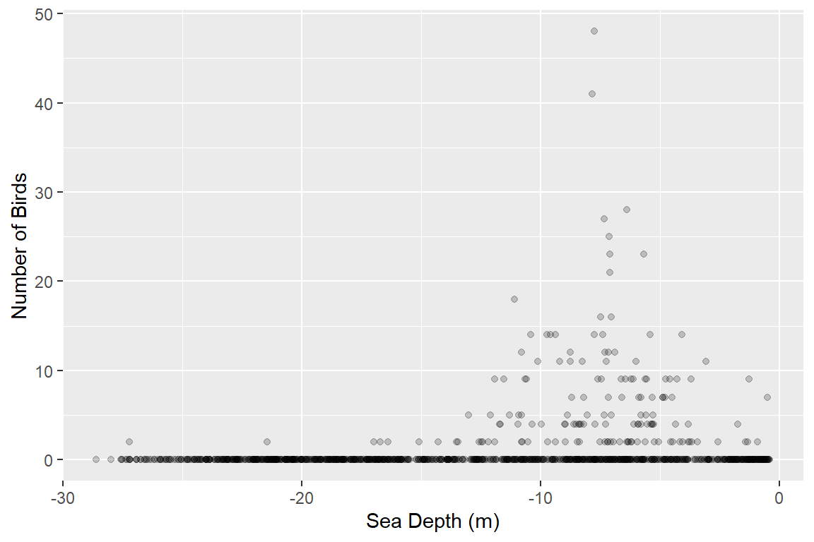
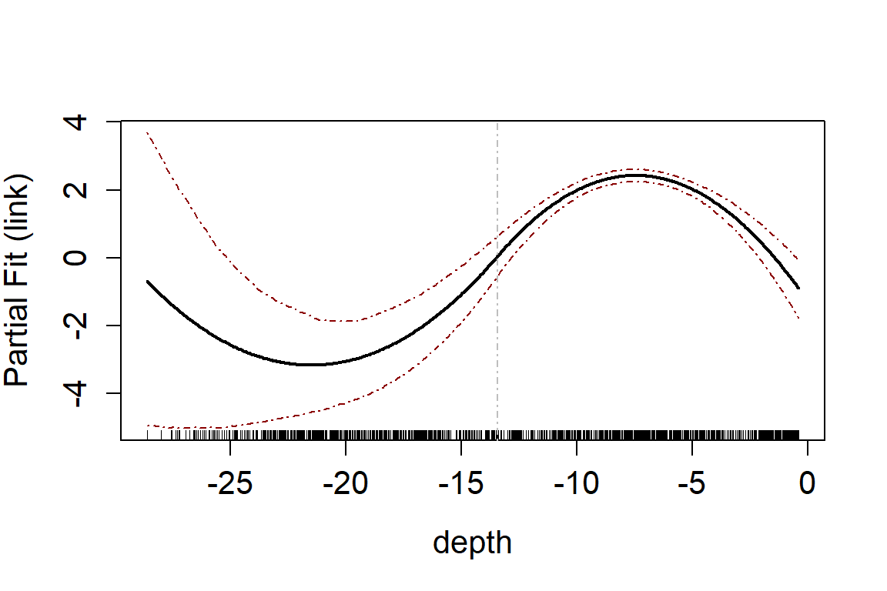
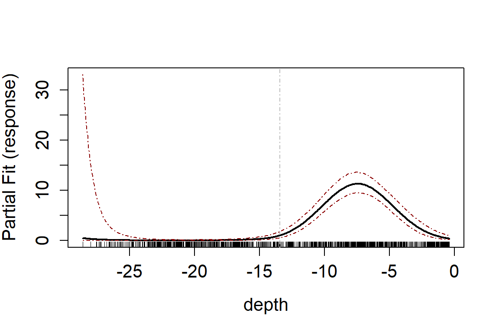
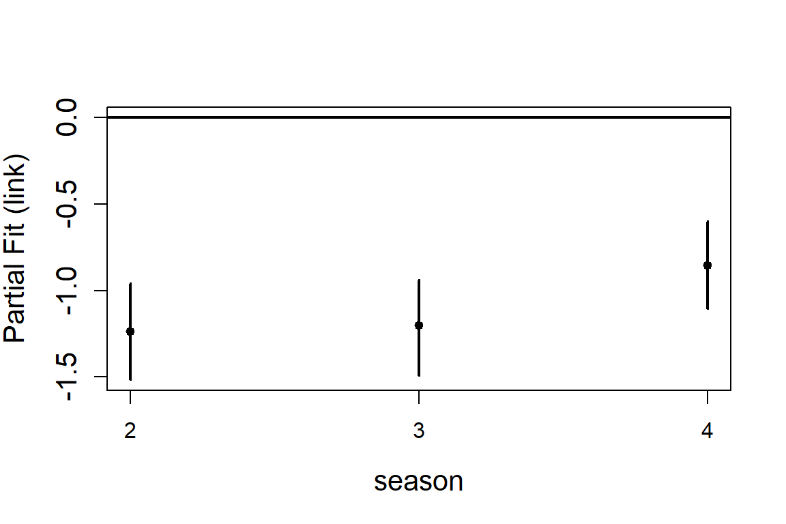
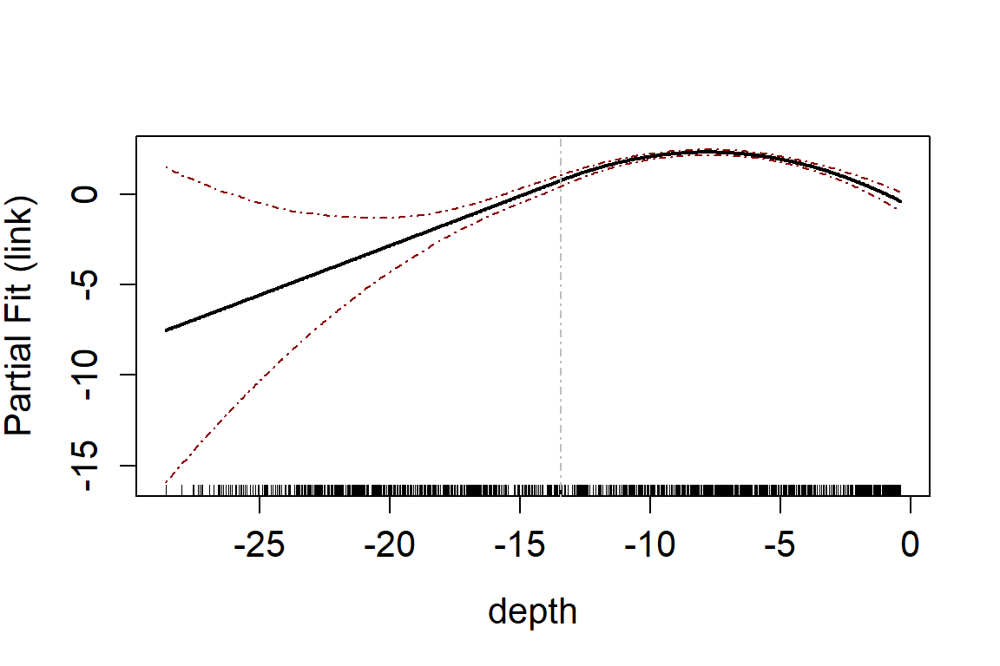
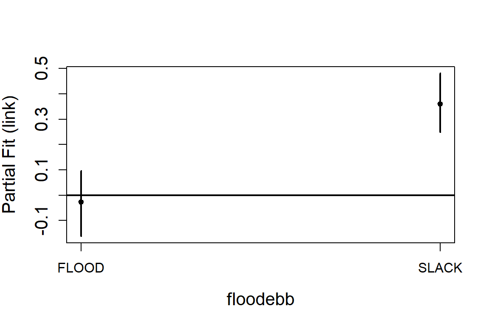
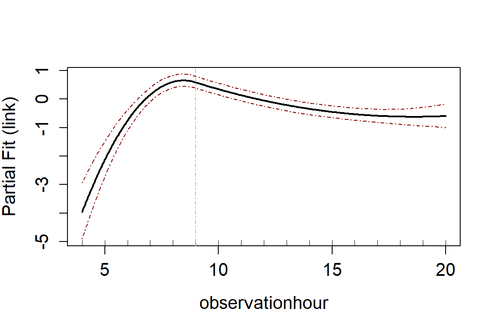
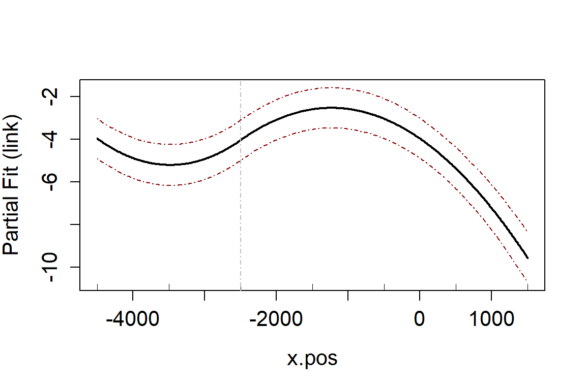
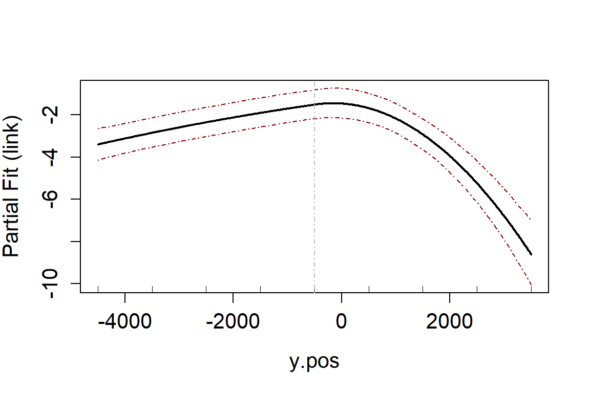
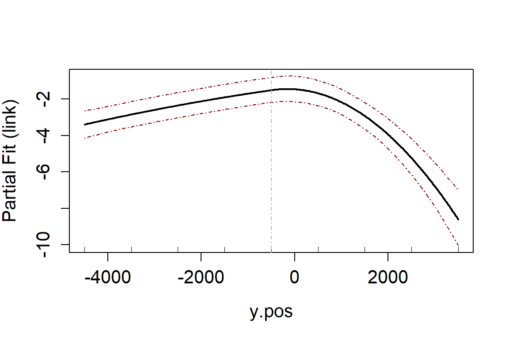

Getting Started with MRSea: One dimensional smoothing
LAS Scott-Hayward
2023-01-27
Source:vignettes/GettingStarted_1Dsmoothing.Rmd
GettingStarted_1Dsmoothing.RmdIntroduction
The MRSea package was developed for analysing data that
was collected for assessing potential impacts of renewable developments
on marine wildlife, although the methods are applicable to many other
studies as well. For example, these methods have been used for more
general spatial distribution modelling and to analyse GPS tagging data
for home ranges.
The MRSea package primarily fits Generalised Additive
Models (GAMs) using a spatially adaptive model selection framework for
both one and two dimensional covariates using the functions
runSALSA1D and runSALSA2D. These functions
implement the methods of implement the methods of Walker et al. (2010), Scott-Hayward et al. (2013) and Scott-Hayward et al. (2022). In addition,
options are available for a variety of different splines and the
estimation of robust standard errors if residual correlation is
present.
A class of model gamMRSea is created when running either
SALSA 1D or 2D. This retains within the model object information
regarding fitting, such as the splineParam object and the
panel structure (if present). The use of the summary
function on these models returns both raw and robust standard errors,
with the p-values from the models hypothesis test using the
robust standard errors. The robust standard errors are obtained using
the panel structure given (independence is one panel per data point and
is the default if no structure is given).
In addition to the functions required to run the models (which we shall go through below) there are also a variety of associated functions for:
Covariate Checking/Selection:
-
summary.gamMRSea(summary function for models) -
runPartialPlots(to plot 1D partial smooth relationships), -
anova.gamMRSea(for model selection; (ANOVA) for robust standard errors) and
Diagnostics:
-
runACF(to assess residual correlation), -
runsTest(to assess residual correlation) -
runDiagnostics(plots of observed vs fitted and fitted vs scaled Pearsons residuals), -
timeInfluenceCheck/runInfluence(assessing the influence of data on precision and predictions), -
plotCumRes(plots of cumulative residuals)
Inference:
-
do.bootstrap.cress.robust(percentile based confidence intervals). -
getDifferences(identifying differences between two prediction surfaces)
Fitting a Simple Model
The data we shall use for this example is from a Danish offshore windfarm and is part of the MRSea package. The data are counts of birds collected along transects over a number of surveys and years. In this first example, we will use all of the data together and assess if there is a relationship between number of birds and sea depth.
# load the data
data("nysted.analysisdata")
wfdata <- filter(nysted.analysisdata, impact==0, season==1)
# load the prediction grid
data("nysted.predictdata")
ggplot() + geom_point(data=wfdata, aes(x=depth, y=response), alpha=1/5) +
xlab("Sea Depth (m)") + ylab("Number of Birds")
Fitting a 1D smooth
Set up the initial model with the offset term (if required) and specify the parameters required. Here we add an offset to be the size of the segment associated with the bird counts. In reality, our bird counts are over a particular area so we have counts per unit area.
The fitness measure can be one of several options (AIC, BIC, QAIC, QBIC, CV). Here we use QBIC as we have a quasi model and information criterion fitting is faster than cross-validation. The default smooth is a B-spline with degree specified as a parameter.
-
minKnots_1dspecifies the minimum number of internal knots to be selected. -
maxKnots_1dspecifies the maximum number of internal knots to be selected. Three is usually a good amount of flexibility and a good start point. -
startKnots_1dspecifies the number of internal knots the SALSA algorithm uses to initialise the process. Usually good to start at 1 knot (this puts one knot at the mean initially) -
degreespecifies the degree of the B-spline. Two is a quadratic. Three is cubic. -
gapsspecifies the minimum gap between knots. Usually this is fine to be set at zero but occasionally there can be estimation problems and so a gap can be set (in the units of the covariate).
salsa1dlist <- list(fitnessMeasure = "QBIC",
minKnots_1d = 1,
maxKnots_1d = 3,
startKnots_1d = 1,
degree = 2,
gaps = c(0))If you wish to make predictions once the model is fitted, then a
prediction grid should be specified in the runSALSA1D
statement. This is because the default splines fitted here (B-splines)
are unable to make predictions outside of the range they were created.
For example, if the data range for depth is smaller than the range of
depths in the prediction data, predictions cannot be made. Here the
range of the predictions is slightly wider than the range of the data,
so we will specify nysted.predictdata when running
SALSA.
Run SALSA:
salsa1dOutput <- runSALSA1D(initialModel = initialModel,
salsa1dlist = salsa1dlist,
varlist = c("depth"),
predictionData = nysted.predictdata,
datain = wfdata,
suppress.printout = TRUE)Note that suppress.printout will not print the progress
of runSALSA1D into your workspace but will save the output
to a log file (salsa1d.log) in your working directory. You may
find it helpful to not suppress the print out to begin with so you can
see what is happening.
Use the built in summary function (summary.gamMRSea) to
look at the summary of the model. Note that robust standard errors are
given alongside the raw standard errors and information regarding panels
is at the bottom of the output. If each data point is a panel, then
independence is assumed and the two standard error columns will be
identical.
Model Summary
The object salsa1doutput has four components:
-
bestModel: the final model -
modelFits1D: a list object with an element for each term fitted to the model. The list includes information on whether the covariate was kept in the model (more on model selection later) and if so the knot locations selected and fitness measure. -
fitStat: The fitness measure of the best model using the fitness measure specified, the cross-validation score of the model (if model selection undertaken) and the dispersion parameter estimate if a quasi model is specified. -
keptvarlist: the list of variables retained in the model (same as input if no model selection)
summary(salsa1dOutput$bestModel)
#>
#> Call:
#> gamMRSea(formula = round(response) ~ bs(depth, knots = splineParams[[2]]$knots,
#> degree = splineParams[[2]]$degree, Boundary.knots = splineParams[[2]]$bd) +
#> offset(log(area)), family = quasipoisson(link = log), data = wfdata,
#> splineParams = splineParams)
#>
#> Deviance Residuals:
#> Min 1Q Median 3Q Max
#> -2.3781 -1.5364 -0.3489 -0.1543 13.4906
#>
#> Coefficients:
#> Estimate Std. Error Robust S.E. t value Pr(>|t|)
#> (Intercept) -0.6628 2.2101 2.2101 -0.300 0.76431
#> s(depth)1 -5.3659 2.6965 2.6965 -1.990 0.04683 *
#> s(depth)2 5.9957 2.1440 2.1440 2.796 0.00525 **
#> s(depth)3 -0.4373 2.3330 2.3330 -0.187 0.85136
#> ---
#> Signif. codes: 0 '***' 0.001 '**' 0.01 '*' 0.05 '.' 0.1 ' ' 1
#>
#> (Dispersion parameter for quasipoisson family taken to be 6.282296)
#>
#> Null deviance: 4987.6 on 1153 degrees of freedom
#> Residual deviance: 3482.4 on 1150 degrees of freedom
#> AIC: NA
#>
#> Max Panel Size = 1 (independence assumed); Number of panels = 1154
#> Number of Fisher Scoring iterations: 6You can find the number of knots chosen for a variable by looking at
the modelFits1D output within salsa1dOutput or
by querying the spline parameters list in the model object. In this
case, one knot has been selected.
# How many knots were chosen for depth?
salsa1dOutput$bestModel$splineParams[[2]]$knots
#> [1] -13.462Assessing model fit using a partial plot. These can be on the link scale:
runPartialPlots(model = salsa1dOutput$bestModel, data = wfdata,
varlist = 'depth',
showKnots = TRUE,
type='link',
includeB0 = TRUE)
#> [1] "Making partial plots"
or the response scale
runPartialPlots(model = salsa1dOutput$bestModel, data = wfdata,
varlist = 'depth',
showKnots = TRUE, type='response',
includeB0 = TRUE)
#> [1] "Making partial plots"
Adding a factor variable
The process is the same as above but you specify the factor variable
in the initial Model. Here we add a season variable. For this we need to
use the full data set nysted.analysisdata.
initialModel <- glm(response ~ 1 + as.factor(season) + offset(log(area)), family = "quasipoisson",
data = nysted.analysisdata)
salsa1dlist <- list(fitnessMeasure = "QBIC",
minKnots_1d = 1,
maxKnots_1d = 3,
startKnots_1d = 1,
degree = 2,
gaps = c(0))
salsa1dOutput.f <- runSALSA1D(initialModel = initialModel,
salsa1dlist = salsa1dlist,
varlist = c("depth"),
predictionData = nysted.predictdata,
datain = nysted.analysisdata,
suppress.printout = TRUE)
runPartialPlots(model = salsa1dOutput.f$bestModel,
data = nysted.analysisdata,
varlist.in = 'depth',
factorlist.in = "season",
showKnots = TRUE,
type='link',
includeB0 = TRUE)
#> [1] "Making partial plots"
Multiple smooth covariates
For this section we will use another renewables data set which is simulated from a vantage point survey of an area used for testing of wave energy devices.
The data are locations on a grid that are observed for birds at a variety of tide states (Flood, Slack, Ebb), times of day, months and over two years. The first year was baseline data and the second after the installation of a testing device. For this example, we will just look at the baseline data (before impact).
data(ns.data.re)
vpdata <- filter(ns.data.re, impact==0) %>%
mutate(response = birds)
head(vpdata)
#> x.pos y.pos area floodebb observationhour GridCode Year DayOfMonth
#> 1 1500 -4500 0.385253 EBB 12 a11 9 13
#> 2 1500 -4500 0.385253 FLOOD 8 a11 9 16
#> 3 1500 -4500 0.385253 FLOOD 9 a11 9 16
#> 4 1500 -4500 0.385253 FLOOD 10 a11 9 16
#> 5 1500 -4500 0.385253 FLOOD 11 a11 9 16
#> 6 1500 -4500 0.385253 FLOOD 12 a11 9 16
#> MonthOfYear impact birds cellid response
#> 1 3 0 0 1 0
#> 2 3 0 0 2 0
#> 3 3 0 0 3 0
#> 4 3 0 0 4 0
#> 5 3 0 0 5 0
#> 6 3 0 0 6 0For the initial model, we include the factor variable for tide state
(flood ebb) and an offset for the area of a grid cell.
initialModel <- glm(response ~ 1 + as.factor(floodebb) + offset(log(area)), family = "quasipoisson",
data = vpdata)We have picked two variables for inclusion as smooth terms, observation hour and x-coordinate.
varlist <- c("observationhour", "x.pos")
salsa1dlist <- list(fitnessMeasure = "QBIC",
minKnots_1d = rep(1, length(varlist)),
maxKnots_1d = rep(1, length(varlist)),
startKnots_1d = rep(1, length(varlist)),
degree = rep(2, length(varlist)),
gaps = rep(0, length(varlist)))
salsa1dOutput.multi <- runSALSA1D(initialModel = initialModel,
salsa1dlist = salsa1dlist,
varlist = varlist,
datain = vpdata,
suppress.printout = TRUE)
runPartialPlots(model = salsa1dOutput.multi$bestModel,
data = vpdata,
varlist.in = varlist,
factorlist.in = "floodebb",
showKnots = TRUE,
type='link',
includeB0 = TRUE)
#> [1] "Making partial plots"
The default is to include these covariates as B-splines. You might consider that observation hour should be a cyclic spline and there is information here on how to use cyclic or natural splines.
To include a two dimensional smooth, e.g. a smooth of coordinate space, see the vignette here
Model selection
Fitting the models as described above will always return the
non-factor covariates as smooth terms regardless of whether this is
sensible or not. There is an optional parameter in
runSALSA1D which allows selection for each smooth term
(smooth, linear or removed) using, by default, 10-fold cross-validation
(regardless of fitness measure chosen). To implement this, set the
paramater removal to be TRUE.
Using the same model above with some more covariates added:
initialModel <- glm(response ~ 1 + floodebb + offset(log(area)), family = "quasipoisson",
data = vpdata)
varlist <- c("observationhour", "x.pos", "y.pos", "MonthOfYear")
salsa1dlist <- list(fitnessMeasure = "QBIC",
minKnots_1d = rep(1, length(varlist)),
maxKnots_1d = rep(1, length(varlist)),
startKnots_1d = rep(1, length(varlist)),
degree = rep(2, length(varlist)),
gaps = rep(0, length(varlist)))
salsa1dOutput.multi.rm <- runSALSA1D(initialModel = initialModel,
salsa1dlist = salsa1dlist,
varlist = varlist,
datain = vpdata,
removal = TRUE, ##
suppress.printout = TRUE)In this case we can see that MonthOfYear was removed
from the model altogether. You can see this from the summary of the
model or the modelFits output:
salsa1dOutput.multi.rm$modelFits[[5]]
#> $term
#> [1] "bs(MonthOfYear, knots = splineParams[[5]]$knots, degree=splineParams[[5]]$degree, Boundary.knots=splineParams[[5]]$bd)"
#>
#> $kept
#> [1] "YES - initial"
#>
#> $basemodelformula
#> gamMRSea(formula = round(response) ~ floodebb + bs(observationhour,
#> knots = splineParams[[2]]$knots, degree = splineParams[[2]]$degree,
#> Boundary.knots = splineParams[[2]]$bd) + bs(x.pos, knots = splineParams[[3]]$knots,
#> degree = splineParams[[3]]$degree, Boundary.knots = splineParams[[3]]$bd) +
#> bs(y.pos, knots = splineParams[[4]]$knots, degree = splineParams[[4]]$degree,
#> Boundary.knots = splineParams[[4]]$bd) + bs(MonthOfYear,
#> knots = splineParams[[5]]$knots, degree = splineParams[[5]]$degree,
#> Boundary.knots = splineParams[[5]]$bd) + offset(log(area)),
#> family = poisson(link = log), data = data)
#>
#> $knotsSelected
#> [1] 6.5
#>
#> $baseModelFits
#> CV fitStat
#> 33.21156 3428.81680
#>
#> $modelfits
#> CV fitStat
#> 33.31378 3409.50256You can see from this output that the model fit (CV score) increased from the baseModel to the one with the Month term included ad that the term was not kept (and therefore also had no knots selected).
runPartialPlots(model = salsa1dOutput.multi.rm$bestModel,
data = vpdata,
varlist.in = salsa1dOutput.multi.rm$keptvarlist, ##
factorlist.in = "floodebb",
showKnots = TRUE,
type='link',
includeB0 = TRUE)
#> [1] "Making partial plots" 

In an ideal world you should use cross-validation for both the flexibility selection and model term selection. However, using CV can be computationally expensive and so using an information criterion for flexibility selection and then CV for variable selection can be more efficient.
What about the factor variable? Factor variable selection is not currently included as part of the SALSA1D variable selection procedure. To check this you can manually assess a model with this term removed.
fit_rmfloodeb <- update(salsa1dOutput.multi.rm$bestModel, . ~ . - floodebb)
set.seed(123)
cv.gamMRSea(modelobject = salsa1dOutput.multi.rm$bestModel,
data = vpdata,
K = 10)$delta[2]
#> [1] 33.30091
set.seed(123)
cv.gamMRSea(modelobject = fit_rmfloodeb,
data = vpdata,
K = 10)$delta[2]
#> [1] 33.50027The CV score increases when the tide state variable is removed so we choose to retain it in the model.
Other options
Alternatively, you can use \(p\)-value selection via an F-test ANOVA.
anova(salsa1dOutput.multi.rm$bestModel)
#> Analysis of 'Wald statistic' Table
#> Model: quasipoisson, link: log
#> Response: round(response)
#> Marginal Testing
#> Max Panel Size = 1 (independence assumed); Number of panels = 13899
#>
#> Df X2 P(>|Chi|)
#> floodebb 2 26.28 1.968e-06 ***
#> s(observationhour) 3 139.82 < 2.2e-16 ***
#> s(x.pos) 3 387.66 < 2.2e-16 ***
#> s(y.pos) 3 251.18 < 2.2e-16 ***
#> s(MonthOfYear) 3 5.91 0.1163
#> ---
#> Signif. codes: 0 '***' 0.001 '**' 0.01 '*' 0.05 '.' 0.1 ' ' 1By specifying anova it is using the
anova.gamMRSea function (as the class of the model is a
gamMRSea model) which uses marginal testing and, if
available, will use a robust variance-covariance matrix for testing.
Further information:
For information on:
- Other types of 1D spline
- Two dimensional smoothing
-
Full
Case Study including information on distance sampling,
gamMRSeamodel diagnostics and using robust standard errors to deal with residual correlation.